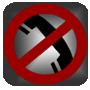

|  | Block It |
Call Blocking
You can block calls from a given set of Caller Ids(Contact-numbers), by adding the
caller Ids from the contacts database. If the contact is not present
in the Contacts, you can add the caller Id manually to the black-list.
Note: The blocked contacts are
added to the Voice-mail. So, It is important that, you clear the
black-list before uninstalling the app. Otherwise, you may left messed up with your contacts.
For deleting a contact from the blacklist, first open the blacklist then touch and hold the contact.
Note: If two or more contacts present in
the phone-book have the same contact-number, then the app will make sure
that both the contacts are added to Calls-blacklist for blocking the
calls from that particular contact-number. If it is not done, you will still
keep receiving the calls from that contact-number.
e.g., if the contact-number 919885779980 is
added to the phone-book under the Contact-names "John" and "Tom", then for
blocking the calls from 919885779980, the application will add both the contacts,
"John" and "Tom" to calls-blacklist.
When you unblock anyone of
the contacts the either contact will also get unblocked automatically.
SMS Blocking
You can block calls from a given set of Caller Ids, by adding the
caller Ids from the contacts database. If the contact is not present
in the Contacts, you can add the caller Id manually to the black-list.
For deleting a contact from the blacklist, first open the blacklist then touch and hold the contact.
Note: Please do disable the notifications raised my any SMS application that is running on your device..
Meet the Developer
Prabhakar
Bikkanati